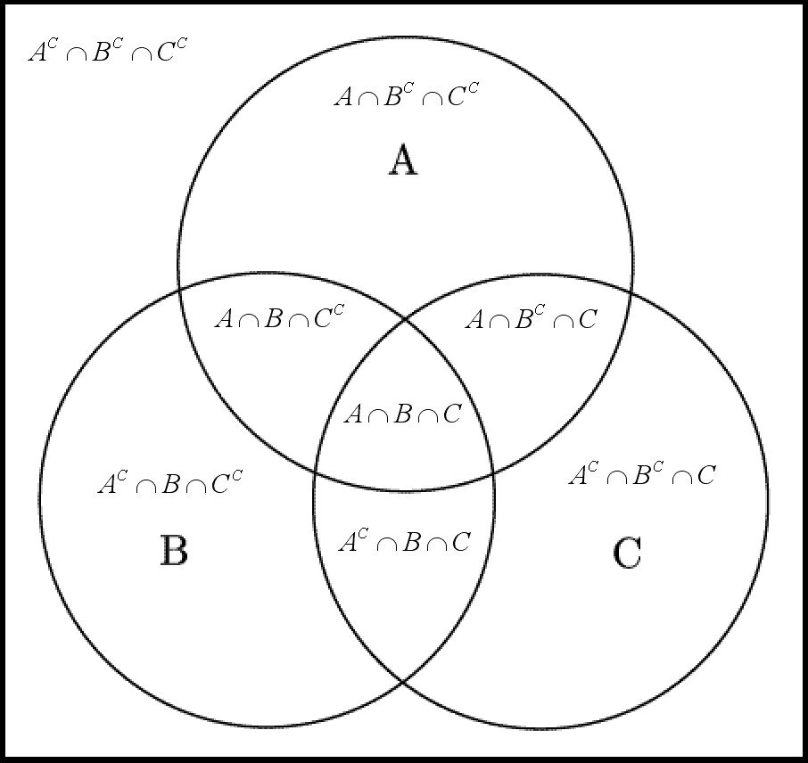

모자 문제(포함-배제의 원리)
A First Course in Probability, 9th edition by Sheldon Ross
Chapter 2, Example 5m, p.39
예제 5m \(N\)명의 남성이 파티에서 각자 자신의 모자를 방 한가운데에 던진다고 하자.
모자들은 먼저 무작위로 섞이고, 각각의 남성이 모자를 하나씩 고른다.
이때 아무도 자기 모자를 고르지 않을 확률은 얼마일까?
이 문제는 처음 보면 당황스럽다.
이 문제를 어떻게 접근해야 하나 하는 생각이 든다.
확률론을 공부하면서 느낀 건데, 확률론은 난이도가 롤러코스터다.
앞부분은 쉽고, 뒷부분은 서서히 어려워지는 미적분과 달리,
확률론은 앞부분부터 히말라야 산맥 등정이다.
그렇다고 미적분보다 훨씬 어렵다고 하기는 뭐한 게,
확률론 특유의 논리를 체화하면 비슷한 느낌으로 다가오는 면이 있기 때문이다.
이 문제는 포함-배제의 원리라는 아이디어만 있으면 풀 수 있다.
포함-배제의 원리는 벤 다이어그램을 떠올리면 쉽다.

우리가 구해야 하는 건 \((A \cup B \cup C)^c\)에 해당하는 부분이다.
이를 어떻게 풀어 쓸 수 있을까?
먼저 \(A + B + C\)를 하고 나면 겹치는 부분이 생긴다.
겹치는 부분인 \(A \cap B\), \(B \cap C\), \(C \cap A\)를 한 번씩 빼 줘야 한다.
하지만 이렇게 하면 세 집합이 모두 겹치는 \(A \cap B \cap C\)가 세 번 빠지므로, 마지막에 한 번 더 더해 주어야 한다.
이게 바로 포함-배제의 원리다!
\[ P((A \cup B \cup C)^c) = 1 - P(A) - P(B) - P(C) + P(A \cap B) + P(B \cap C) + P(C \cap A) - P(A \cap B \cap C) \]
그러면 이것을 확률론에 적용시키면 어떻게 될까?
각 \(i = 1, 2, \dots, N\)에 대해:
- \(E_i\): i번째 사람이 자기 모자를 고르는 사건
이라 하면, - 우리가 원하는 사건은 \(\left( \bigcup_{i=1}^N E_i \right)^c\)이다.
포함-배제의 원리에 따라 다음과 같이 쓸 수 있다:
\[ P\left(\bigcup_{i=1}^N E_i\right) = \sum_{i=1}^N P(E_i) - \sum_{i_1 < i_2} P(E_{i_1} E_{i_2}) + \cdots + (-1)^{n+1} \sum_{i_1 < \cdots < i_n} P(E_{i_1} \cdots E_{i_n}) + \cdots + (-1)^{N+1} P(E_1 E_2 \cdots E_N) \] (이런 수식에 겁먹을 필요 없다. 이는 단지 포함-배제의 원리를 일반화한 수식에 불과하다.)
각 항의 계산은 다음과 같다. 예를 들어 \(n\)명의 사람이 자기 모자를 고르는 사건 \(E_{i_1} \cdots E_{i_n}\)이 일어날 확률은:
\[ P(E_{i_1} E_{i_2} \cdots E_{i_n}) = \frac{(N - n)!}{N!} \]
왜일까?
일단 전체 경우의 수는 \(N!\)이기 때문에 분모에 들어간다.
\(n\)명의 사람이 자기 모자를 이미 골랐기 때문에,
나머지 \(N - n\)명이 남은 \(N - n\)개의 모자를 임의로 고르는 경우의 수는 \((N - n)!\)이고 이는 분자에 들어간다.
이러한 조합은 \(\binom{N}{n}\)개 있으므로, 경우의 수를 전부 고려한 전체 합은:
\[ \binom{N}{n} \cdot \frac{(N - n)!}{N!} = \frac{1}{n!} \]
이 된다.
따라서:
\[ P\left(\bigcup_{i=1}^N E_i\right) = \sum_{n=1}^N \frac{(-1)^{n+1}}{n!} \]
결국 아무도 자기 모자를 고르지 않을 확률은:
\[ 1 - P\left(\bigcup_{i=1}^N E_i\right) = 1 - \left(\frac{1}{1!} - \frac{1}{2!} + \frac{1}{3!} - \cdots + (-1)^N \frac{1}{N!}\right) = \sum_{i=0}^N \frac{(-1)^i}{i!} \]
이것은 지수 함수의 테일러 전개와 정확히 일치한다:
\[ e^{-1} = \sum_{i=0}^\infty \frac{(-1)^i}{i!} \approx 0.3679 \]
즉, 사람이 많아질수록 아무도 자기 모자를 고르지 않을 확률은 **약 \(\frac{1}{e} \approx 0.3679\)**로 수렴한다.
뭔가 0으로 수렴할 것 같은 문제의 답이 뜬금없어 보이는 \(\frac{1}{e}\)으로 수렴한다는 점이 신기하다.